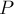
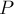

MAXimal
добавлено: 10 Jun 2008 19:30
редактировано: 10 Dec 2012 16:05
Содержание [скрыть]
Нахождение кратчайших путей от заданной вершины до всех остальных вершин алгоритмом Дейкстры
Постановка задачи
Дан ориентированный или неориентированный взвешенный граф с  вершинами и
вершинами и  рёбрами. Веса всех рёбер неотрицательны. Указана некоторая стартовая вершина
рёбрами. Веса всех рёбер неотрицательны. Указана некоторая стартовая вершина  . Требуется найти длины кратчайших путей из вершины во все остальные вершины, а также предоставить способ вывода самих кратчайших путей.
. Требуется найти длины кратчайших путей из вершины во все остальные вершины, а также предоставить способ вывода самих кратчайших путей.
Эта задача называется "задачей о кратчайших путях с единственным источником" (single-source shortest paths problem).
Алгоритм
Здесь описывается алгоритм, который предложил голландский исследователь Дейкстра (Dijkstra) в 1959 г.
Заведём массив ![d[]](../tex2png/cache/192f42354669dea1048458208212e4d4.png) , в котором для каждой вершины
, в котором для каждой вершины  будем хранить текущую длину
будем хранить текущую длину ![d[v]](../tex2png/cache/1d6e1859e7756da32846240db3a97517.png) кратчайшего пути из в . Изначально , а для всех остальных вершин эта длина равна бесконечности (при реализации на компьютере обычно в качестве бесконечности выбирают просто достаточно большое число, заведомо большее возможной длины пути):
кратчайшего пути из в . Изначально , а для всех остальных вершин эта длина равна бесконечности (при реализации на компьютере обычно в качестве бесконечности выбирают просто достаточно большое число, заведомо большее возможной длины пути):
Кроме того, для каждой вершины будем хранить, помечена она ещё или нет, т.е. заведём булевский массив ![u[]](../tex2png/cache/df09cae95940e511f8d96cbe8d9ad6b7.png) . Изначально все вершины не помечены, т.е.
. Изначально все вершины не помечены, т.е.
Сам алгоритм Дейкстры состоит из итераций. На очередной итерации выбирается вершина с наименьшей величиной среди ещё не помеченных, т.е.:
(Понятно, что на первой итерации выбрана будет стартовая вершина .)
Выбранная таким образом вершина отмечается помеченной. Далее, на текущей итерации, из вершины производятся релаксации: просматриваются все рёбра  , исходящие из вершины , и для каждой такой вершины
, исходящие из вершины , и для каждой такой вершины  алгоритм пытается улучшить значение . Пусть длина текущего ребра равна , тогда в виде кода релаксация выглядит как:
алгоритм пытается улучшить значение . Пусть длина текущего ребра равна , тогда в виде кода релаксация выглядит как:
На этом текущая итерация заканчивается, алгоритм переходит к следующей итерации (снова выбирается вершина с наименьшей величиной  , из неё производятся релаксации, и т.д.). При этом в конце концов, после итераций, все вершины графа станут помеченными, и алгоритм свою работу завершает. Утверждается, что найденные значения и есть искомые длины кратчайших путей из в .
, из неё производятся релаксации, и т.д.). При этом в конце концов, после итераций, все вершины графа станут помеченными, и алгоритм свою работу завершает. Утверждается, что найденные значения и есть искомые длины кратчайших путей из в .
Стоит заметить, что, если не все вершины графа достижимы из вершины , то значения для них так и останутся бесконечными. Понятно, что несколько последних итераций алгоритма будут как раз выбирать эти вершины, но никакой полезной работы производить эти итерации не будут (поскольку бесконечное расстояние не сможет прорелаксировать другие, даже тоже бесконечные расстояния). Поэтому алгоритм можно сразу останавливать, как только в качестве выбранной вершины берётся вершина с бесконечным расстоянием.
Восстановление путей. Разумеется, обычно нужно знать не только длины кратчайших путей, но и получить сами пути. Покажем, как сохранить информацию, достаточную для последующего восстановления кратчайшего пути из до любой вершины. Для этого достаточно так называемого массива предков: массива ![p[]](../tex2png/cache/f41743bb1304c4dfaee1474862f9de80.png) , в котором для каждой вершины хранится номер вершины , являющейся предпоследней в кратчайшем пути до вершины . Здесь используется тот факт, что если мы возьмём кратчайший путь до какой-то вершины , а затем удалим из этого пути последнюю вершину, то получится путь, оканчивающийся некоторой вершиной , и этот путь будет кратчайшим для вершины . Итак, если мы будем обладать этим массивом предков, то кратчайший путь можно будет восстановить по нему, просто каждый раз беря предка от текущей вершины, пока мы не придём в стартовую вершину — так мы получим искомый кратчайший путь, но записанный в обратном порядке. Итак, кратчайший путь  до вершины равен:
, в котором для каждой вершины хранится номер вершины , являющейся предпоследней в кратчайшем пути до вершины . Здесь используется тот факт, что если мы возьмём кратчайший путь до какой-то вершины , а затем удалим из этого пути последнюю вершину, то получится путь, оканчивающийся некоторой вершиной , и этот путь будет кратчайшим для вершины . Итак, если мы будем обладать этим массивом предков, то кратчайший путь можно будет восстановить по нему, просто каждый раз беря предка от текущей вершины, пока мы не придём в стартовую вершину — так мы получим искомый кратчайший путь, но записанный в обратном порядке. Итак, кратчайший путь  до вершины равен:
Осталось понять, как строить этот массив предков. Однако это делается очень просто: при каждой успешной релаксации, т.е. когда из выбранной вершины происходит улучшение расстояния до некоторой вершины , мы записываем, что предком вершины является вершина :
Доказательство
Основное утверждение, на котором основана корректность алгоритма Дейкстры, следующее. Утверждается, что после того как какая-либо вершина становится помеченной, текущее расстояние до неё уже является кратчайшим, и, соответственно, больше меняться не будет.
Доказательство будем производить по индукции. Для первой итерации справедливость его очевидна — для вершины имеем , что и является длиной кратчайшего пути до неё. Пусть теперь это утверждение выполнено для всех предыдущих итераций, т.е. всех уже помеченных вершин; докажем, что оно не нарушается после выполнения текущей итерации. Пусть — вершина, выбранная на текущей итерации, т.е. вершина, которую алгоритм собирается пометить. Докажем, что действительно равно длине кратчайшего пути до неё (обозначим эту длину через ).
Рассмотрим кратчайший путь до вершины . Понятно, этот путь можно разбить на два пути: , состоящий только из помеченных вершин (как минимум стартовая вершина будет в этом пути), и остальная часть пути  (она тоже может включать помеченные вершины, но начинается обязательно с непомеченной). Обозначим через
(она тоже может включать помеченные вершины, но начинается обязательно с непомеченной). Обозначим через  первую вершину пути , а через — последнюю вершины пути .
первую вершину пути , а через — последнюю вершины пути .
Докажем сначала наше утверждение для вершины , т.е. докажем равенство . Однако это практически очевидно: ведь на одной из предыдущих итераций мы выбирали вершину и выполняли релаксацию из неё. Поскольку (в силу самого выбора вершины ) кратчайший путь до равен кратчайшему пути до плюс ребро , то при выполнении релаксации из величина действительно установится в требуемое значение.
Вследствие неотрицательности стоимостей рёбер длина кратчайшего пути (а она по только что доказанному равна ) не превосходит длины кратчайшего пути до вершины . Учитывая, что (ведь алгоритм Дейкстры не мог найти более короткого пути, чем это вообще возможно), в итоге получаем соотношения:
С другой стороны, поскольку и , и — вершины непомеченные, то так как на текущей итерации была выбрана именно вершина , а не вершина , то получаем другое неравенство:
Из этих двух неравенств заключаем равенство , а тогда из найденных до этого соотношений получаем и:
что и требовалось доказать.
Реализация
Итак, алгоритм Дейкстры представляет собой итераций, на каждой из которых выбирается непомеченная вершина с наименьшей величиной , эта вершина помечается, и затем просматриваются все рёбра, исходящие из данной вершины, и вдоль каждого ребра делается попытка улучшить значение на другом конце ребра.
Время работы алгоритма складывается из:
- раз поиск вершины с наименьшей величиной среди всех непомеченных вершин, т.е. среди
 вершин
вершин - раз производится попытка релаксаций
При простейшей реализации этих операций на поиск вершины будет затрачиваться операций, а на одну релаксацию —  операций, и итоговая асимптотика алгоритма составляет:
операций, и итоговая асимптотика алгоритма составляет:
Реализация:
const int INF = 1000000000; int main() { int n; ... чтение n ... vector < vector < pair<int,int> > > g (n); ... чтение графа ... int s = ...; // стартовая вершина vector<int> d (n, INF), p (n); d[s] = 0; vector<char> u (n); for (int i=0; i<n; ++i) { int v = -1; for (int j=0; j<n; ++j) if (!u[j] && (v == -1 || d[j] < d[v])) v = j; if (d[v] == INF) break; u[v] = true; for (size_t j=0; j<g[v].size(); ++j) { int to = g[v][j].first, len = g[v][j].second; if (d[v] + len < d[to]) { d[to] = d[v] + len; p[to] = v; } } } }
Здесь граф  хранится в виде списков смежности: для каждой вершины список
хранится в виде списков смежности: для каждой вершины список ![g[v]](../tex2png/cache/7fe07e18a35dc318b49ca0ee3c3683f0.png) содержит список рёбер, исходящих из этой вершины, т.е. список пар ">, где первый элемент пары — вершина, в которую ведёт ребро, а второй элемент — вес ребра.
содержит список рёбер, исходящих из этой вершины, т.е. список пар ">, где первый элемент пары — вершина, в которую ведёт ребро, а второй элемент — вес ребра.
После чтения заводятся массивы расстояний , меток и предков . Затем выполняются итераций. На каждой итерации сначала находится вершина , имеющая наименьшее расстояние среди непомеченных вершин. Если расстояние до выбранной вершины оказывается равным бесконечности, то алгоритм останавливается. Иначе вершина помечается как помеченная, и просматриваются все рёбра, исходящие из данной вершины, и вдоль каждого ребра выполняются релаксации. Если релаксация успешна (т.е. расстояние меняется), то пересчитывается расстояние и сохраняется предок .
После выполнения всех итераций в массиве оказываются длины кратчайших путей до всех вершин, а в массиве — предки всех вершин (кроме стартовой ). Восстановить путь до любой вершины  можно следующим образом:
можно следующим образом:
vector<int> path; for (int v=t; v!=s; v=p[v]) path.push_back (v); path.push_back (s); reverse (path.begin(), path.end());
Литература
- Томас Кормен, Чарльз Лейзерсон, Рональд Ривест, Клиффорд Штайн. Алгоритмы: Построение и анализ [2005]
- Edsger Dijkstra. A note on two problems in connexion with graphs [1959]